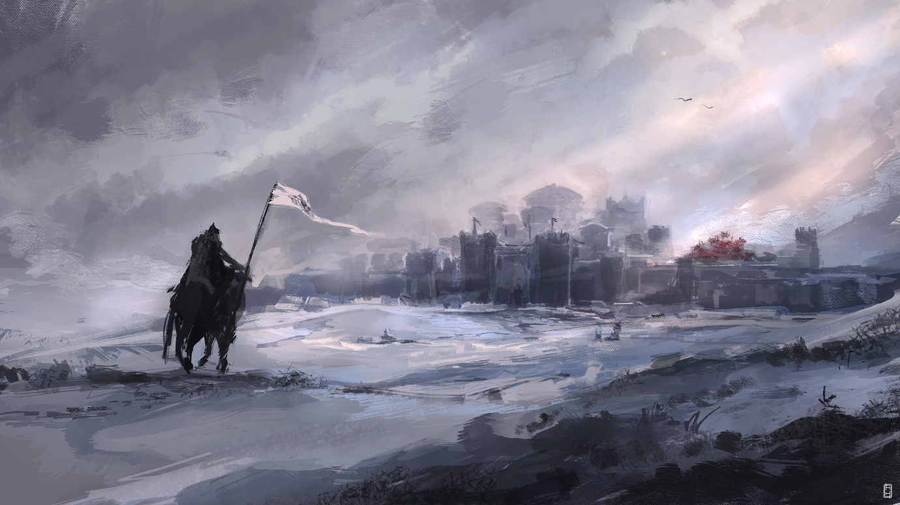

Север
Крайний северный регион Семи Королевств, крупнейший по площади, хотя и относительно малонаселённый. Часто говорят, что по площади Север не уступает остальным шести королевствам, вместе взятым, но это преувеличение; судя по картам, Север — область под властью Старков из Винтерфелла — занимает лишь около трети государства. Это холодная и бедная страна, где снег может выпасть в любое время года, а долгие зимы так тяжелы, что не все надеются их пережить. Народ Севера — потомки Первых Людей, сохранившие веру в Старых Богов. Север когда-то был суверенным королевством, и Старки из Винтерфелла носили титул Королей Зимы.
